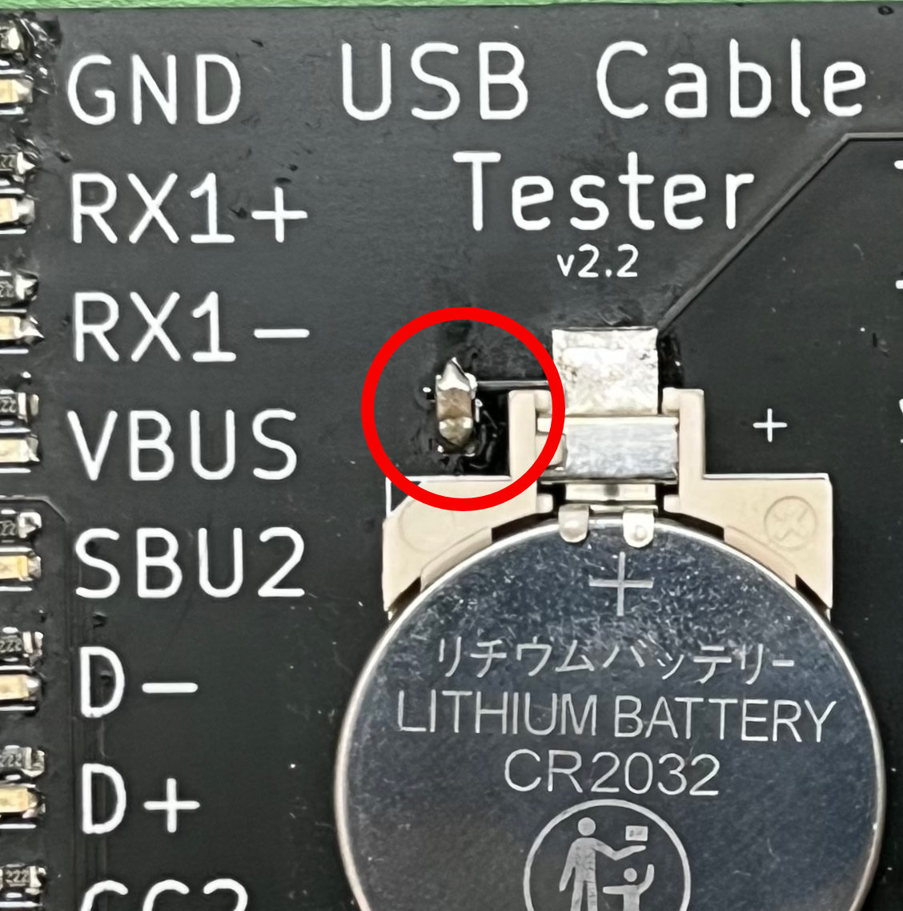

Löte die Widerstände und die LEDs auf die Platine, die oberen Kontakte sind für die Widerstände und die
unteren für die LEDs
Wichtig: die LEDs haben eine Ausrichtung.
12 LEDs + Widerstände sind für die linke Seite und 12 für die rechte Seite bestimmt. Das letze Paar kommt
unten in die linke Ecke der Platine.
Löte die Buchsen auf die Platine. Anordnung siehe Bild. Für die Stecker auf der rechten Seite spielt es
keine Rolle, ob einzelne Kontakte sich untereinander berühren und einen Kurzschluss bilden.
Löte den Kondensator an die richtige Stelle neben dem Pluspol der Batterie. Die Ausrichtung spielt keine Rolle.

Löte die Batterie-Halterung an. Achte auf die richtige Polung! Es gibt eine kleine Markierung an der Ecke der
Halterung für den Plus- und Minuspol.
Und fertig ist dein USB Tester! Viel Spass beim Testen von USB-Kabeln!